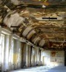

-
Le second cycle
- Filières, horaires
- E.I.E.
- Affectations, inscriptions
- Baccalauréat
- Données statistiques
- Vie scolaire
- Règlement intérieur
- Retards / Absences
- Elèves en difficulté
-
Projet pédagogique et culturel
- Projet d'établissement
- Actions pédagogiques, culturelles et civiques
- Conférences
- Partenariats
- Informatique
- Sorties scolaires
- Atelier Théâtre
-
Relations internationales
- Partenariat avec Athènes
- Partenariat avec Mexico
- Voyages et échanges
-
Intendance
- Règlement
- Tarification
- Paiement en ligne
- Cantine
- Bourses

À LA UNE
PARCOURSUP
La procédure d'orientation 2022 vers l'enseignement supérieur débute le 21 Décembre.
Après une phase de découverte des formations, les élèves devront s'inscrire sur la plateforme PARCOURSUP en ligne et entrer leurs voeux entre le 20 Janvier 2022 et le 29 Mars 2002 inclus.
Pour plus de renseignements se connecter au site PARCOURSUP
26 JANVIER 2022 - JOURNEE PORTES OUVERTES CGPE
La Journée Portes Ouvertes des CPGE du lycée Charlemagne se tiendra le Mercredi 26 Janvier 2022 à partir de 13h30.
En raison des conditions sanitaires actuelles cette journée se déroulera par visioconférences durant tout l'après-midi.
Pour les informations de connexion ouvrir la page dédiée Journée Portes Ouvertes 2022
PROTOCOLE SANITAIRE EN VIGUEUR
Vous trouverez ici le protocole sanitaire en vigueur depuis la rentrée 2021
RESTAURATION DE LA BIBLIOTHEQUE DES JESUITES
Suite au permis de construire délivré par la région Ile-de-France le 20 octobre 2021, les travaux de restauration de l'ancienne bibliothèque des Jésuites au 3ème étage de l'aile Nord du lycée Charlemagne vont commencer.

Visite virtuelle de la bibliothèque
L' inauguration de la bibliothèque serait prévue au cours du premier trimestre de l'année 2023-2024.
PRIX LYCEEN DU LIVRE DE PHILOSOPHIE
Pour la troisième année consécutive, des élèves de Terminale participeront au jury du Prix lycéen du livre de philosophie.
Ils et elles sont invité(e)s à se rapprocher de Madame Carlin, professeure de philosophie ou de Madame Dubois, professeure documentaliste.
Plus d'informations ici
Des réunions en petits groupes seront proposées aux élèves désirant participer à cette action.
MESURE ECOLOGIQUE
Chaque lundi et chaque jeudi une poubelle de récupération du papier usagé, à couvercle jaune, sera à la disposition de tous dans la cour du lycée. Cette mesure a été adoptée par le CVL du lycée.
STAGES INTENSIFS DE LANGUES

Des stages intensifs de langues gratuits pendant les vacances sont proposés aux lycéens dans 3 langues : anglais, allemand, espagnol.
D'une durée de 15 heures, ils s'étalent sur 5 jours du lundi au vendredi le matin ou l'après-midi pour l'anglais et l'espagnol, et le matin uniquement pour l'allemand.
AIDE AUX ELEVES EN DIFFICULTE

« Les élèves du lycée Charlemagne bénéficient d’aides reposant sur une offre diversifiée et recherchant une individualisation des formes de soutien :
PROJET VOLTAIRE
Par le biais du Projet Voltaire, numéro 1 de la remise à niveau en orthographe, les collège et lycée Charlemagne s'engagent dans cette voie de la remédiation.
Cet outil pédagogique permet à tout élève de revoir ou approfondir ses connaissances en orthographe, grammaire, conjugaison et ainsi d'améliorer sa maîtrise de l'écrit avant les épreuves du brevet, du baccalauréat ou des concours aux grandes écoles.